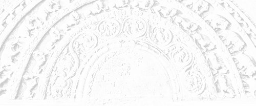

Sermon 25
Namo tassa bhagavato arahato sammāsambuddhassa
Namo tassa bhagavato arahato sammāsambuddhassa
Namo tassa bhagavato arahato sammāsambuddhassaEtaṁ santaṁ, etaṁ paṇītaṁ,
yadidaṁ sabbasaṅkhārasamatho sabbūpadhipaṭinissaggo
taṇhakkhayo virāgo nirodho nibbānaṁ.1“This is peaceful, this is excellent,
namely the stilling of all preparations, the relinquishment of all assets,
the destruction of craving, detachment, cessation, extinction.”
With the permission of the Most Venerable Great Preceptor and the assembly of the venerable meditative monks. This is the twentyfifth sermon in the series of sermons on Nibbāna. The other day we made an attempt to understand, in the light of the Kāḷakārāmasutta, the enlightened attitude of the Tathāgata, who has realized the cessation of the six bases of sense-contact, towards the view-points of the worldlings, who find themselves confined within those six bases.
In that discourse, the Buddha declared with the words tam ahaṁ jānāmi, “[all] that do I know”,2 the fact that he has understood all what the world with its gods, Māras and Brahmas, and the progeny consisting of recluses and Brahmins, gods and men, have seen, heard, sensed, cognized, thought after and pondered over by the mind.
By his next assertion tam ahaṁ abbhaññāsiṁ, the Buddha proclaimed that he not only knows all that, but knows it thoroughly in some special way. With the words taṁ tathāgatassa viditaṁ, he declares that by virtue of this special knowledge he has understood all what the world claims to know. Despite this special knowledge and understanding, the Tathāgata takes no stance and has no inclination or partiality towards those sensory data, as is evident from the expression taṁ tathāgato na upaṭṭhāsi.
Worldings in general are in the habit of asserting dogmatically “I know, I see, it is verily so”, jānāmi passāmi tath’ eva etaṁ,3 when they have a special knowledge or understanding of something or other.
But according to this discourse, it seems that the Buddha takes no stance and has no inclination or partiality towards those sensory data, precisely because he has a special knowledge and understanding with regard to them. This fact is highlighted by the concluding summary verses, particularly by the lines:
Jānāmi passāmi tath’ eva etaṁ,
ajjhositaṁ n’ atthi tathāgatānaṁ.I know, I see, ’tis verily so.
No such clinging for the tathāgatas.
In order to explain this strange difference of attitude, we quoted the other day two significant terms from the Mūlapariyāyasutta of the Majjhima-nikāya, namely sañjānāti and abhijānāti. They represent two levels of knowledge in the context of that particular discourse.
Sañjānāti stands for perceptual knowledge, whereas abhijānāti conveys the idea of some special understanding of a higher order. The level of knowledge implied by the term sañjānāti is that which characterizes the ordinary worldling’s world view. He is deluded by the mirage-like perception in his view of the world and goes on imagining, maññanā, a real world enslaved to the patterns of the grammatical structure.
But the Tathāgata has penetrated into the true nature of those seens, heards, sensed and the like, with his extraordinary level of higher knowledge, abhiññā, yielding full comprehension. Therefore, he does not take his stand upon any of them. He has no stance to justify the usage of the term upaṭṭhāsi, since he does not entertain imaginings, maññanā.
What is called maññanā is the imagining in egoistic terms, imparting reality to illusory things. It is this principle of refraining from vain imaginings that is indicated by the term na upaṭṭhāsi, “does not take his stand upon”.
Tathāgatas have no clinging or entanglement, ajjhositaṁ, precisely because they entertain no imaginings. In regard to things seen, heard, etc. the tathāgatas have no clinging, binding or entanglement by way of craving, conceit and views, respectively.
We happened to mention the other day that those peculiar declarations, with which the Kāḷakārāmasutta opens, bear some resemblance to the tetralemma discussed in our treatment of the undetermined points.4
The set of four alternative propositions concerning the Tathāgata’s after death state may be cited as a paradigm for the tetralemma.
- Hoti tathāgato paraṁ maraṇā,
“the Tathāgata exists after death”; - na hoti tathāgato paraṁ maraṇā,
“the Tathāgata does not exist after death”; - hoti ca na ca hoti tathāgato paraṁ maraṇā,
“the Tathāgata both exists and does not exist after death”; - n’eva hoti na na hoti tathāgato paraṁ maraṇā,
“the Tathāgata neither exists nor does not exist after death”.5
The declarations found in this discourse bear some affinity to the above-mentioned tetralemma. However, we find here the Buddha making the first declaration in several stages. Firstly, he makes the statement that whatever is seen, heard, sensed, and cognized, thought after and pondered over by all beings in the world, that he knows.
In the second statement he affirms that he has a higher knowledge of all that. Then comes a sentence which reaffirms that the Tathāgata has understood, but ends with the statement “the Tathāgata does not take his stand upon it”.
Generally, when confronted with the tetralemma, the Buddha summarily dismisses all the four alternative propositions. But here the peculiarity is in not dismissing the first proposition at once. He declares that he knows, that he has a higher knowledge, and that he has understood all that.
Apparently he is affirming the first proposition, granting the validity of sensory data. But then comes the concluding statement to the effect that he does not take his stand upon them, na upaṭṭhāsi, which amounts to a negation.
The secret behind this peculiar presentation will emerge when we bring up the proper similes and parables. Till then, what can be gleaned from the context is that the Tathāgata has no stance, not because he is ignorant, but due to the very fact that he knows full well and has understood the nature of the sum total of sensory data.
The worldlings are prone to think that it is when convincing knowledge is lacking that one has no such stance. But the Buddha declares here that he takes no stance in regard to what is seen, heard, sensed etc., precisely because he has a special understanding, a penetrative knowledge of the essence-lessness of the data obtained through the six sense-bases.
So it seems, in this context too, we have the negation of the first alternative, as is usual in the case of a tetralemma, only that the negation is expressed here in a very peculiar way. Let us now take up the second declaration.
Yaṁ, bhikkhave, sadevakassa lokassa samārakassa sabrahmakassa sassamaṇabrāhmaṇiyā pajāya sadevamanussāya diṭṭhaṁ sutaṁ mutaṁ viññātaṁ pattaṁ pariyesitaṁ anuvicaritaṁ manasā, tam ahaṁ ’na jānāmī’ti vadeyyaṁ, taṁ mama assa musā.
If I were to say, monks, whatsoever in the world, with its gods, Māras and Brahmas, among the progeny consisting of recluses and Brahmins, gods and men, whatsoever is seen, heard, sensed, and cognized, thought after and pondered over by the mind, all that I do not know, it would be a falsehood in me.
There is a difference of opinion as to the correct reading of this second declaration. Deep suttas often present difficulties in determining the exact reading, and this is especially the case with the Kāḷakārāmasutta.
In this instance, the commentary has followed the reading tam ahaṁ ’jānāmī’ti vadeyyaṁ, taṁ mama assa musā, “if I were to say ‘that I know’, it would be a falsehood in me”. But as we have pointed out earlier, this reading is not meaningful.6 That is probably why the Chaṭṭhasaṅgīti-piṭaka edition has followed the variant reading tam ahaṁ ’na jānāmī’ti vadeyyaṁ, “if I were to say ‘that I do not know’”. This departure from the commentarial tradition seems justifiable, since the Buddha has already declared that he knows all that.
It stands to reason, therefore, that in the second declaration he makes it clear that to say “I do not know” would be a contradiction, a falsehood. But why this clarification?
Generally the worldlings expect one to unequivocally assert and take one’s stand upon one’s viewpoint in categorical terms, as expressed by the dictum idam eva saccaṁ, mogham aññaṁ, “this alone is true, all else is false”.7 Failure to do so is recognized as a lack of knowledge or precision.
The second declaration is meant to forestall such an objection, since the first declaration ends with the clause taṁ tathāgato na upaṭṭhāsi, but “the Tathāgata has not taken his stand upon it”. So it amounts to a statement like “it is not because I do not know that I take no stance”. In the same strain, we can explain the declarations that follow.
It seems, then, that the second declaration,
tam ahaṁ ’na jānāmī’ti vadeyyaṁ, taṁ mama assa musā,
if I were to say, “all that I do not know”, it would be a falsehood in me,
amounts to the second alternative of the tetralemma.
The next declaration follows the same trend. To quote the relevant portion,
tam ahaṁ ‘jānāmi ca na ca jānāmī’ti vadeyyaṁ, taṁ p’ assa tādisam eva,
if I were to say “I both know it and do not know it”, that too would be a falsehood in me.
In regard to the aforesaid seens, heards, sensed etc., if I were to say that I know, I do not know, or even a combination of both those statements as “I both know and do not know”, it would be a falsehood on my part.
Why? Because the world is accustomed to put down such a vacillation to a lack of certitude. To say “I both know it and know it not” looks like a confession of partial knowledge, since it can mean knowledge and ignorance going fifty-fifty. So the Buddha says, in this instance, too, that it would likewise be a falsehood, taṁ p’ assa tādisam eva.
Now we come to the fourth statement. The Buddha declares,
if I were to say “I neither know it, nor am ignorant of it”, it would be a fault in me,
tam ahaṁ ’neva jānāmi na na jānāmī’ti vadeyyaṁ, taṁ mama assa kali.
We can understand that position, too. Generally the worldlings think that a refusal to make a categorical statement is either due to partial knowledge, or to an attitude of wriggling out. In fact, this attitude of wriggling out had already assumed the status of a philosophy in itself in Sañjaya Belaṭṭhiputta, a contemporary of the Buddha.
When he was interrogated, he would respond with such a series of negations like “I do not say it is, I do not say it is thus, I do not say it is otherwise, nor do I say it is neither”, etc.8 The attempt here is to evade the issue by a sort of ‘eel-wriggling’. That school of philosophy, which resorted to such an evasive legerdemain, came to be known as amarā-vikkhepa-vāda. The Buddha refuses to subscribe to such tactical sophistry by rejecting the fourth alternative ‘I neither know it, nor am ignorant of it’.
Here, then, we have the same tetralemma, presented in a different guise. It smacks of a riddle that the Buddha was confronted with – the riddle of coming to terms with worldly parlance. As we have already mentioned, the commentary analyses the main theme of the discourse into five planes. It also records that the earth shook at five points of the discourse, that is, at the end of the proclamation for each plane.9
According to the commentary, the first plane is the plane of omniscience, sabbaññutabhūmi. The phrases representative of that plane are said to be:
- tam ahaṁ jānāmi, “that I know”,
- tam aham abbhaññāsiṁ, “that have I fully understood”, and
- taṁ tathāgatassa viditaṁ, “that is known to the Tathāgata”.
Then comes the plane of the influx-free one, khīṇāsavabhūmi, represented by the section ending with the phrase:
- na upaṭṭhāsi, “does not take his stand upon it”.
It is so called because that phrase brings out the characteristic of not taking a stance by way of cravings, conceits and views in the case of an influx-free one.
The three phrases:
- taṁ mama assa musā, “it would be a falsehood on my part”,
- taṁ p’ assa tādisam eva, “likewise, that too would be a falsehood in me”, and
- taṁ mama assa kali, “it would be a fault in me”,
are interpreted by the commentary as representing the third plane of truth, saccabhūmi. We have now dealt with that, too.
What comes next as the fourth plane is the deepest of all. The commentary calls it the plane of the void, suññatābhūmi. It is with good reason that it is so called. The paragraph that follows is said to represent that plane; it runs:
Iti kho, bhikkhave, tathāgato diṭṭhā daṭṭhabbaṁ diṭṭhaṁ na maññati, adiṭṭhaṁ na maññati, daṭṭhabbaṁ na maññati, daṭṭhāraṁ na maññati. Sutā sotabbaṁ sutaṁ na maññati, asutaṁ na maññati, sotabbaṁ na maññati, sotāraṁ na maññati. Mutā motabbaṁ mutaṁ na maññati, amutaṁ na maññati, motabbaṁ na maññati, motāraṁ na maññati. Viññātā viññātabbaṁ viññātaṁ na maññati, aviññātaṁ na maññati, viññātabbaṁ na maññati, viññātāraṁ na maññati.
Here, too, we are confronted with the question of variant readings. To begin with, here we have given the phrase diṭṭhā daṭṭhabbaṁ diṭṭhaṁ, whereas the commentary takes it as daṭṭhā daṭṭhabbaṁ diṭṭhaṁ. According to the commentary, daṭṭhā is a hypothetical variant of the absolutive form disvā, for it paraphrases ’daṭṭhā daṭṭhabban’ti disvā daṭṭhabbaṁ,10 that is, “daṭṭhā daṭṭhabbaṁ stands for disvā daṭṭhabbaṁ”. So the whole sentence in question is said to convey the sense “having seen, he does not imagine a seen worth seeing”. But the variant reading diṭṭha is granted, though the commentator prefers the reading daṭṭha as it is suggestive of an absolutive dṛṣṭvā.
Taking the cue from this commentarial preference, the Burmese Chaṭṭhasaṅgīti edition goes a step further in substituting sutvā, mutvā and viññatvā rather arbitrarily to give an absolutive twist to the three phrases that follow as sutvā sotabbaṁ sutaṁ, mutvā motabbaṁ mutaṁ, and viññatvā viññātabbaṁ viññātaṁ. Probably the editors thought that in this context the terms diṭṭha suta muta and viññāta could not be interpreted as they are.
But we may point out that, in keeping with the line of interpretation we have followed so far, these three terms may be said to stand for an extremely deep dimension of this discourse, dealing with the void. The other day we simply gave a sketch of a possible rendering.
The statement:
diṭṭhā daṭṭhabbaṁ diṭṭhaṁ na maññati
has to be interpreted as an assertion that the Tathāgata
does not imagine a sight worthwhile seeing as apart from the seen,
that there is nothing substantial in the seen. So also the other statements,
sutā sotabbaṁ sutaṁ na maññati,
does not imagine a worthwhile hearing apart from the heard;
mutā motabbaṁ mutaṁ na maññati,
does not imagine a worthwhile sensing apart from the sensed;
viññātā viññātabbaṁ viññātaṁ na maññati,
does not imagine a worthwhile cognition apart from the cognized.
In case our interpretation still appears problematic, we may hark back to the Bāhiyasutta we have already explained at length.11 The philosophy behind the Buddha’s exhortation to the ascetic Bāhiya could be summed up in the words
diṭṭhe diṭṭhamattaṁ bhavissati, sute sutamattaṁ bhavissati, mute mutamattaṁ bhavissati, viññāte viññātamattaṁ bhavissati,12
in the seen there will be just the seen, in the heard there will be just the heard, in the sensed there will be just the sensed, in the cognized there will be just the cognized.
What is meant is that one has to stop at just the seen, without discursively imagining that there is some-‘thing’ seen, some-‘thing’ substantial behind the seen. Similarly in regard to the heard, one has to take it as just a heard, not some-‘thing’ heard.
In the case of the phrase diṭṭhā daṭṭhabbaṁ diṭṭhaṁ na maññati the word diṭṭhā, being in the ablative case, we may render it as “does not imagine a sight worthwhile seeing ‘as apart from’ the seen”.
By way of further clarification of this point, we may revert to the simile of the dog on the plank, which we gave in our explanation of nāma-rūpa.13 The simile, of course, is not canonical, but of fable origin.
When a dog, while crossing a stream, stops halfway on the plank and starts wagging its tail and peeping curiously down, the reason is the sight of its own image in the water. It imagines a dog there, a ‘water-dog’. The dog thinks that there is something worthwhile seeing, apart from the seen.
It is unaware of the fact that it is seeing what it sees because it is looking. It thinks that it is looking because there is something out there to be seen. The moment it realizes that it is seeing because it is looking, it will stop looking at its own image in the water.
We have here a very subtle point in the law of dependent arising, one that is integral to the analysis of name-and-form. So, then, due to the very ignorance of the fact that it is seeing because it is looking, the dog imagines another dog, there, in the water. What is called maññanā is an imagining of that sort.
No such imagining is there in the Tathāgata, diṭṭhā daṭṭhabbaṁ diṭṭhaṁ na maññati, “he does not imagine a sight worth seeing as apart from the seen”. In short, for him the seen is the be all and the end all of it.
The seen is dependently arisen, it comes about due to a collocation of conditions, apart from which it has no existence per se. Every instance of looking down at the water is a fresh experience and every time an image of the dog in the water and of another looking at it is created. The dog is seeing its own image. Everything is dependently arisen, phassapaccayā, says the Brahmajāla-sutta, ‘dependent on contact’.14
Here there is something really deep. It is because of the personality-view, sakkāyadiṭṭhi, that the world is carried away by this illusion. One goes on looking saying that one is doing so as there is something to be seen. But the seen is there because of the looking.
This, then, is the moral behind the statement diṭṭhā daṭṭhabbaṁ diṭṭhaṁ na maññati, “does not imagine a seen worthwhile seeing as apart from the seen itself”. This is the dictum implicit in the Bāhiya-sutta, too, which could be illustrated by the simile of the dog on the plank. The Tathāgata does not imagine a sight as existing from the bare act of seeing.
If further illustrations are needed, let us take the case of hearing music from a distance. One imagines a thing called ‘music’ and with the idea of listening to the same music goes to the place where the music is going on. One is not aware of the fact that at each step in that direction one is hearing a different music. Why? Because one is ignorant of the law of dependent arising. Just as in the former case the dog seen is dependent on the dog looking, here too, the auditory consciousness of a music is the outcome of a dependence between ear and sound.
So, deluded as he is, he goes to the music hall to listen better to the same music. He will realize the extent of his delusion if he happens to put his ear to the musical instrument. When he does so, he will hear not a music, but a set of crude vibrations.
But this is what is going on in the world. The world is steeped in the delusion of imagining that it is the same music one is hearing, though at each step in that direction the music changes. This is due to the fact that it is dependently arisen. Actually, there is no person hearing, but only a state of affairs dependent on the ear and sound, a conditioned arising dependent on contact. In the present textual context, the terms diṭṭha suta muta and viññāta, seen, heard, sensed and cognized, have to be understood in this light.
So this is how the phrase diṭṭhā daṭṭhabbaṁ diṭṭhaṁ na maññati has to be interpreted. But the commentary does not seem to have appreciated the relevance of this paragraph to the Buddha’s teachings on voidness. While commenting on diṭṭhaṁ na maññati it expatiates ’ahaṁ mahājanena diṭṭhameva passāmī’ti taṇhāmānadiṭṭhīhi na maññati. According to it, what is meant is that the Tathāgata does not imagine by way of cravings, conceits and views that he is seeing just what the common people have seen. This is an oversimplification, a rather shallow interpretation.
The next phrase, adiṭṭhaṁ na maññati, is similarly explained, ’adiṭṭhaṁ na maññatī’ti ’ahaṁ mahājanena adiṭṭhameva etaṁ passāmī’ti evampi taṇhādihi maññanāhi na maññati, “he does not imagine an unseen” means that the Tathāgata does not imagine by way of imaginings through craving etc. that he is seeing something unseen by the common people. The commentary, it seems, has gone at a tangent, bypassing the deeper sense.
We have already explained the deeper significance of the phrase, diṭṭhaṁ na maññati, “does not imagine a seen”. Now what does adiṭṭhaṁ na maññati mean?
In terms of our simile of the dog on the plank, diṭṭhaṁ na maññati means that the Tathāgata does not imagine a dog in the water.
Adiṭṭhaṁ na maññati could therefore mean that the Tathāgata does not imagine that the dog has not seen. Why he does not treat it as an unseen should be clear from that declaration we had already cited, ending with tam ahaṁ ’na jānāmī’ti vadeyyaṁ, taṁ mama assa musā, “if I were to say ‘that I do not know’, it would be a falsehood in me”.
The fact of seeing is not denied, though what is seen is not taken as a dog, but only as an image of one, that is dependently arisen. Since the understanding of it as a dependently arisen phenomenon is there, the Tathāgata does not imagine an unseen either, adiṭṭhaṁ na maññati.
The phrase daṭṭhabbaṁ na maññati, is also explicable in the light of the foregoing discussion. Now, the dog on the plank keeps on looking down at the water again and again because it thinks that there is something worthwhile seeing in the water. Such a delusion is not there in the Tathāgata. He knows that at each turn it is a phenomenon of a seen dependently arisen, dependent on contact, phassapaccayā.
Every time it happens, it is a fresh sight, a new preparation, saṅkhāra. So there is nothing to look for in it. Only a looking is there, nothing worth looking at. Only a seeing is there, nothing to be seen. Apart from the bare act of hearing, there is nothing to be heard. It is the wrong view of a self that gives a notion of substantiality. The above phrase, therefore, is suggestive of insubstantiality, essencelessness, and voidness.
Music is just a word. By taking seriously the concept behind that word, one imagines a thing called ‘music’. The pandemonium created by a number of musical instruments is subsumed under the word ‘music’. Then one goes all the way to listen to it. The same state of affairs prevails in the case of the seen. It is because the Tathāgata has understood this fact that he does not imagine a thing worth seeing or hearing. The same applies to the other sensory data.
Then comes the phrase daṭṭhāraṁ na maññati, “does not imagine a seer”. Here we have the direct expression of voidness – the voidness of a self or anything belonging to a self. Now that dog on the plank has not understood the fact that there is a mutual relationship between the looking dog and the seen dog. It is because of the looking dog that the seen dog is seen. There is a conditioned relationship between the two.
In other words, dependent on eye and forms arises eye-consciousness, cakkhuñca paṭicca rūpe ca uppajjati cakkhuviññāṇaṁ.15 The mere presence of the eye is not enough for eye consciousness to arise, but dependent on eye and forms, arises eye-consciousness.
Though stated simply, it has a depth that is not easy to fathom. To say that it is dependent on eye and form is to admit that it is dependently arisen. The law of dependent arising is already implicated. There is therefore no seer, apart from the phenomenon of seeing, according to the Tathāgata. He does not imagine a seer, daṭṭhāraṁ na maññati. For the worldling, the bare act of seeing carries with it a perception of ‘one who sees’. He has a notion of a self and something belonging to a self.
The same teaching is found in the Bāhiya-sutta. After instructing Bāhiya to stop at just the seen, the heard, the sensed and the cognized, the Buddha goes on to outline the end result of that training.
Yato kho te, Bāhiya, diṭṭhe diṭṭhamattaṁ bhavissati, sute sutamattaṁ bhavissati, mute mutamattaṁ bhavissati, viññāte viññātamattaṁ bhavissati, tato tvaṁ Bāhiya na tena. Yato tvaṁ Bāhiya na tena, tato tvaṁ Bāhiya na tattha. Yato tvaṁ Bāhiya na tattha, tato tvaṁ Bāhiya nev’ idha na huraṁ na ubhayamantarena. Es’ ev’ anto dukkhassa.16
And when to you, Bāhiya, there will be in the seen just the seen, in the heard just the heard, in the sensed just the sensed, in the cognized just the cognized, then, Bāhiya, you are not by it. And when, Bāhiya, you are not by it, then, Bāhiya, you are not in it. And when, Bāhiya, you are not in it, then, Bāhiya, you are neither here nor there nor in between. This, itself, is the end of suffering.
That is to say, when, Bāhiya, you have gone through that training of stopping at just the seen, the heard, the sensed and the cognized, then you would not be imagining in terms of them. The algebraic – like expressions na tena and na tattha have to be understood as forms of egoistic imagining, maññanā.
When you do not imagine in terms of them, you would not be in them. There would be no involvement in regard to them. In the case of that music, for instance, you would not be in the orchestra. The egoistic imagining, implicating involvement with the music, presupposes a hearer, sotaraṁ, dwelling in the orchestra.
When, Bāhiya, you do not dwell in it, yato tvaṁ Bāhiya na tattha, then, Bāhiya, you are neither here, nor there, nor in between the two, tato tvaṁ Bāhiya nev’ idha na huraṁ na ubhayamantarena. This itself is the end of suffering. In other words, you would have realized voidness, suññatā.
The expression daṭṭhāraṁ na maññati, “does not imagine a seer”; sotāraṁ na maññati, “does not imagine a hearer”; motāraṁ na maññati, “does not imagine a sensor”; and viññātāraṁ na maññati, “does not imagine a knower”, have to be understood in this light. The Tathāgata does not even imagine a thinker apart from thought. This is the plane of the void, suññatābhūmi, the perfect realization of the corelessness or essencelessness of the seen, the heard, the sensed and the cognized.
The very absence of maññanā, or ‘egoistic imagining’, is to be understood by suññatābhūmi, or ‘the plane of the void’. The worldling takes seriously the subject-object relationship in the grammatical structure, as it seems the simplest explanation of phenomena. Because there is something to be seen, there is someone who sees. Because there is someone who sees, there is something to be seen.
There is a duality between these two. To understand the law of dependent arising is to be free from this duality. It is the ability to see a concatenation of conditions, a conglomeration of causal factors – an assemblage instead of a bifurcation.
The way of the worldlings, however, is to follow the subject-object relationship, a naive acceptance of the grammatical structure, which is the easiest mode of communication of ideas. They are misled by it to take seriously such notions as ‘one who sees’ and a ‘thing seen’, ‘one who hears’ and a ‘thing heard’, but the Tathāgata is free from that delusion.
Now we come to the fifth section of the discourse, known as tādibhūmi, the ‘plane of the such’. It runs:
Iti kho, bhikkhave, tathāgato diṭṭha-suta-muta-viññātabbesu dhammesu tādī yeva tādī, tamhā ca pana tādimhā añño tādī uttaritaro vā paṇītataro vā natthī’ti vadāmi.
Thus, monks, the Tathāgata, being such in regard to all phenomena, seen, heard, sensed and cognized, is such. Moreover than he who is such there is none other higher or more excellent, I declare.
The most difficult word, here, is tādī. We have already explained it to some extent. It can be rendered by ‘such’ or ‘thus’. The commentary explains it by the phrase tāditā nāma ekasadisatā,17 “suchness means to be always alike”.
By way of illustration, the commentary states Tathāgato ca yādiso lābhādīsu, tādisova alābhādīsu, “as he is in regard to gain etc., so is the Tathāgata in regard to loss etc.”. The allusion here is to the eight worldly vicissitudes, gain/loss, fame/ill-fame, praise/blame, and pleasure/pain.18
But this explanation is rather misleading, as it ignores a certain deep dimension of the meaning of the term tādī. When it is said “as he is in regard to gain, so is he in regard to loss”, one can ask: “how is he in regard to gain?” This is imprecise as a meaning.
However, the commentator happens to quote from the Mahāniddesa another explanation, which is more to the point. It is briefly stated as iṭṭhāniṭṭhe tādī, “such in regard to the desirable and the undesirable”; and explained as:
lābhepi tādī, alābhepi tādī, yasepi tādī, ayasepi tādī, nindāyapi tādī, pasaṁsāyapi tādī, sukhepi tādī, dukkhepi tādī,19
he is such in gain as well as in loss, he is such in fame as well as in ill-fame … etc.
That is the correct explanation. Instead of saying “as he is in gain, so is he in loss”, we have here a continuous suchness in regard to all vicissitudes. He is such in gain as well as in loss, he is such in fame as well as in ill-fame, he is such in praise as well as in blame, he is such in pleasure as well as in pain.
The reason for this suchness we have explained on an earlier occasion.20 In one sense, the term tādī stands for the understanding of the norm called tathatā. The other implication is the abstinence from the tendency towards identification or acquisition, meant by tammayatā. This exemplary trait is called atammayatā. This is an extremely important term, occurring in the discourses, which, however, has fallen into neglect at present.
In the case of music, for instance, tammayatā would imply an attachment to it that amounts to an identification with it. Tammayo means ‘made of that’, as in suvaṇṇamaya, ‘made of gold’, and rajatamaya, ‘made of silver’. To be free from this tammayatā, is to be tādī, ‘such’, that is to say, not to be of that stuff, atammayatā. The attitude of not leaning on or grasping is meant by it.
The quality of being tādī, or ‘such’, is often rendered by ‘firmness’, ‘steadfastness’, and ‘immovability’. Generally, one associates firmness, immovability or stability with holding on or leaning on. But here we have just the contrary. Not to hold on to anything, is to be ‘such’. This suchness has a flexibility of a higher order, or an adaptability. The adaptability characteristic of the sage who lives on piṇḍapāta, or alms-food, is highlighted in the following verse:
Alatthaṁ yadidaṁ sādhu,
nālatthaṁ kusalām iti,
ubhayeneva so tādī,
rukkhaṁ va upanivattati.21Suppose I got it, well and good,
Suppose I didn’t get, that’s fine too,
In both circumstances he is such,
And comes back [like one who walks up to a] tree.
This kind of adaptability and resilience is also implied by the term tādī. Though the term is sometimes rendered by the word ‘steadfast’, it does not stand for any rigidity. Instead, it carries implications of a non-rigid resilience.
This is a wonderful quality in tathāgatas and arahants. We may compare it to a revolving swing in a children’s playground. One who is seated in a revolving swing has nothing to get upset about falling headlong when the swing goes up. The seats are hung in such a way that they also turn with the revolving motion of the swing. Had they been rigidly fixed, one seated there would fall off the seat when it goes up. It is that kind of resilience that is characteristic of the quality of tāditā, or ‘suchness’. This is how we have to understand the famous lines in the Mahāmaṅgalasutta.
Phuṭṭhassa lokadhammehi,
cittam yassa na kampati,22Whose mind remains unshaken,
When touched by worldly vicissitudes.
This quality of being unshaken, this immovability, is the result of not grasping. It comes when there is no tenacious clinging. It is to one who rests on or leans on something that there is dislodgement or instability.
Now I am leaning on the wall, if someone does damage to the wall, I would get shaken, that is what is suggested by the axiom:
nissitassa calitaṁ, anissitassa calitaṁ natthi,23
to one who is attached, there is dislodgement, to the one detached, there is no dislodgement.
The worldling, on the other hand, thinks that to lean on or to rely on something is the mark of stability.
So it seems that the term tādī has an extraordinary dimension of meaning. In this particular context, however, the suchness spoken of does not concern the eight worldly vicissitudes like gain and loss. Here it carries a special nuance as is evident from the statement:
Iti kho, bhikkhave, tathāgato diṭṭha-suta-muta-viññātabbesu dhammesu tādī yeva tādī.
Thus, monks, the Tathāgata, being such in regard to all phenomena, seen, heard, sensed and cognized, is such.
The suchness here meant is about the views adhered to by the worldlings. In regard to things seen, heard, sensed and cognized, the worldlings go on asserting dogmatically idam eva saccaṁ, mogham aññaṁ, “this alone is true, all else is false”. But the Tathāgata has no such dogmatic involvement. He only analytically exposes them for what they are.
As we tried to illustrate by the simile of the dog on the plank, the Tathāgata simply penetrates into their dependently arisen nature and declares that all those views are dependent on contact, phassapaccayā. That is the tādī quality meant here.
If we are to understand the plane of suchness, tādībhūmi, in a deeper sense, this is how we have to appreciate its significance. Now we come to the couplet forming the grand finale to the Kāḷakārāmasutta.
Yaṁ kiñci diṭṭhaṁ va sutaṁ mutaṁ vā,
ajjhositaṁ saccamutaṁ paresaṁ,
na tesu tādī sayasaṁvutesu,
saccaṁ musā vā pi paraṁ daheyyaṁ.Etañca sallaṁ paṭigacca disvā,
ajjhositā yattha pajā visattā,
jānāmi passāmi tath’ eva etaṁ,
ajjhositaṁ natthi tathāgatānaṁ.
In the first verse, we have the difficult term sayasaṁvutesu, which we rendered by “amidst those who are entrenched in their own views”. The term carries insinuations of philosophical in-breeding, which often accounts for dogmatic adherence to views.
The Tathāgata declares that he does not hold as true or false any of the concepts of individual truths based on what is seen, heard, sensed and cognized by others, because of his suchness. Being such, he does not categorically label any of those views as true or false. He penetrates into and analyses the psychological background of all those dogmatic views and understands them as such.
In the final verse, he declares that he has seen well in advance “the barb on which mankind is hooked impaled”. The barb is none other than the dogmatic assertion, “I know, I see, it is verily so”. Having seen this barb, well in advance, the Tathāgata entertains no dogmatic involvement of that sort.
The precise meaning of some words and phrases here is a matter of controversy. A discussion of them might throw more light on their deeper nuances. The most difficult term seems to be sayasaṁvuta. The commentary gives the following explanation:
’Sayasaṁvutesu’ti ’sayameva saṁvaritvā piyāyitvā gahitagahaṇesu diṭṭhigatikesū’ti attho. Diṭṭhigatikā hi ’sayaṁ saṁvutā’ti vuccanti.24
Sayasaṁvutesu means among those dogmatic view-holders, who have grasped those views, having recollected them and cherished them. Dogmatic view-holders are called sayasaṁvuta.
According to the commentary, the term sayasaṁvuta refers to persons who hold dogmatic views. But we interpreted it as a reference to such views themselves.
By way of clarification, we may allude to some discourses in the Aṭṭhakavagga of the Suttanipāta, which bring up a wealth of material to substantiate the salient points in the Kāḷakārāmasutta, while throwing more light on the particular term in question.
The chapter called Aṭṭhakavagga in the Suttanipāta in particular embodies a deep analysis of the controversies among contemporary dogmatists.
Let us, first of all, take up for comment some verses that throw more light on the meaning of the term sayasaṁvuta from the Cūḷaviyūhasutta. That discourse unfolds itself in the form of question and answer. The commentary explains, that this medium of dialogue was adopted by the Buddha to resolve the clash of philosophical moot points current in the society, and that the interlocutor is a replica of the Buddha himself, created by his psychic power.25 Be that as it may, the relevant question for the present context is presented as follows.
Kasmā nu saccāni vadanti nānā,
pavādiyāse kusalā vadānā,
saccāni su tāni bahūni nānā,
udāhu te takkam anussaranti.26Why do they proclaim various truths,
Claiming to be experts each in his field,
Are there several and various truths,
Or do they merely follow logical consistency?
The Buddha’s reply to it is as follows.
Na h’eva saccāni bahūni nānā,
aññatra saññāya niccāni loke,
takkañ ca diṭṭhīsu pakappayitvā,
’saccaṁ musā’ti dvayadhammam āhu.There are no several and various truths,
That are permanent in the world, apart from perception,
It is by manipulating logic in speculative views,
That they speak of two things called ‘truth and falsehood’.
There is no plurality in the concept of truth, apart from the perception based on which they declare various speculative views. It seems that the Buddha grants the possibility of various levels of perception as a truth for all times, though he does not accept a plurality of truths, arising out of a variety of speculative views based on them.
He understands the psychology of logic, having seen penetratively the perceptual background of each and every view. He accepts as a psychological fact that such and such a perception could precipitate such and such a view. Therefore, in a limited or relative sense, they are ‘true’.
The dichotomy between truth and falsehood has arisen in the world due to a manipulation of logic on individual viewpoints. This fact comes up for further comment in the Mahāviyūhasutta that follows.
Sakaṁ hi dhammaṁ paripuṇṇam āhu,
aññasssa dhammaṁ pana hīnaṁ āhu,
evam pi viggayha vivādiyanti,
sakaṁ sakaṁ sammutim āhu sacaṁ.27
This verse describes how debating parties go on clashing with each other. They call their own system of thought perfect, and the other system of thought inferior. Thus they quarrel and dispute. Their own individual viewpoint they assert as true. The phrase sakaṁ sakaṁ sammutim, “each his own viewpoint”, is somewhat suggestive of sayasaṁvutesu, the problematic term in the Kāḷakārāmasutta.
Yet another verse from the Pasūrasutta in the Aṭṭhakavagga exposes the biases and prejudices underlying these individual truths.
‘Idh’eva suddhi’ iti vādiyanti,
nāññesu dhammesu visuddhim āhu,
yaṁ nissitā tattha subhaṁ vadānā,
paccekasaccesu puthū niviṭṭhā.28‘Here in this system is purity’, they assert polemically,
They are not prepared to grant purity
in other systems of thought,
Whatever view they lean on, that they speak in praise of,
They are severally entrenched in their own individual truths.
The last line is particularly relevant, as it brings up the concept of paccekasacca. To be a Paccekabuddha means to be enlightened for oneself. So the term paccekasacca can mean ‘truth for oneself’. Those who hold conflicting views go on debating entrenched each in his own concept of truth.
The three expressions pacekasacca, sakaṁ sakaṁ sammutim and sayasaṁvutesu convey more or less the same idea. The words tesu sayasaṁvutesu refer to those narrow viewpoints to which they are individually confined, or remain closeted in. The Tathāgata does not hold as true or false any of those views limited by the self-bias.
Another lapse in the commentary to the Kāḷakārāmasutta is its comment on the phrase paraṁ daheyyaṁ. It takes the word paraṁ in the sense of ‘supreme’, uttamaṁ katvā, whereas in this context it means ‘the other’. Here, too, we may count on the following two lines of the Cūḷaviyūhasutta of the Suttanipāta in support of our interpretation.
Yen’ eva ’bālo’ti paraṁ dahāti,
tenātumānaṁ ’kusalo’ti cāha.29That by which one dubs the other a fool,
By that itself one calls oneself an expert.
From this it is clear that the phrase paraṁ dahāti means ‘dubs another’. The last two lines of the Kāḷakārāmasutta are of utmost importance.
Jānāmi passāmi tath’ eva etaṁ,
ajjhositaṁ natthi tathāgatānaṁ.I know I see, it is verily so,
No such clinging for the tathāgatas.
Worldlings dogmatically grasp the data heaped up by their six sense-bases, but the tathāgatas have no such entanglements in regard to sensory knowledge. Why so? It is because they have seen the cessation of the six sense-bases.
By way of illustration, we may compare this seeing of the cessation of the six sense-bases to an exposure of the inner mechanism of a high-speed engine by removing the bonnet. In the Dvayamsutta, from which we quoted in our last sermon, the Buddha showed us the functioning of the gigantic machine called the six-fold sense-base, its vibrations, revolutions, beats and running gears. The discourse analyses the mechanism in such words as:
Cakkhu aniccaṁ vipariṇāmi aññathābhāvi. Rūpā aniccā vipariṇāmino aññathābhāvino. Itthetaṁ dvayaṁ calañceva vyayañca aniccaṁ vipariṇāmi aññathābhāvi.30
Eye is impermanent, changing, becoming otherwise. Forms are impermanent, changing, becoming otherwise. Thus this dyad is unstable, evanescent, impermanent, changing, becoming otherwise.
The discourse proceeds in this vein and concludes with the words:
Phuṭṭho, bhikkhave, vedeti, phuṭṭho ceteti, phuṭṭho sañjānāti. Itthete pi dhammā calā ceva vayā ca aniccā vipariṇāmino aññathābhāvino.
Contacted, monks, one feels, contacted one intends, contacted one perceives. Thus these things, too, are unstable, evanescent, impermanent, changing and becoming otherwise.
The concluding reference is to the products of the six sense-bases. Feelings, intentions and perceptions, arising due to contact, are also unstable, evanescent, impermanent, changing and becoming otherwise.
The sum total of percepts is indicated by the words diṭṭha suta muta and viññāta. The totality of percepts are made up or ‘prepared’, saṅkhata. The term saṅkhata has nuances suggestive of ‘production’. If we take the six-fold sense-base as a high-speed machine, productive of perceptions, the Buddha has revealed to us the workings of its intricate machinery. Each and every part of this machine is unstable, evanescent, impermanent, changing and becoming otherwise.
The Buddha understood the made up or prepared nature, saṅkhata, of all these, as well as the preparations, saṅkhārā, that go into it. That is why the Buddha has no dogmatic involvement in regard to the products of this machine, the totality of all what is seen, heard, sensed and cognized, diṭṭha suta muta viññāta. None of them is substantial. They are essenceless and insubstantial. There is nothing worthwhile grasping here as apart from the activities or preparations that are dynamic in themselves.
So far we have tried to understand the state of affairs with reference to this discourse. But now let us take up a canonical simile that facilitates our understanding. The Buddha has compared consciousness to a magic show in the Pheṇapiṇḍūpamasutta of the Khandhasaṁyutta we had already cited.
Pheṇapiṇḍūpamaṁ rūpaṁ,
vedanā bubbuḷūpamā,
marīcikūpamā saññā,
saṅkhārā kadalūpamā,
māyūpamañca viññāṇaṁ,
dīpitādiccabandhunā.31Form is like a mass of foam,
And feeling but an airy bubble,
Perception is like a mirage,
And formations a banana trunk,
Consciousness is a magic show [a juggler’s trick entire],
[All these similes] were made known by the kinsman of the sun.
As a matter of fact, the verse itself is a mnemonic summary of a certain sermon delivered by the Buddha. According to it, the Buddha, the kinsman of the sun, has compared form to a mass of foam, feeling to a water bubble, perception to a mirage, preparations to a banana trunk, and consciousness to a magic show.
What is of relevance to us here is the comparison of consciousness to a magic show. The simile of the magic show is presented in that sutta in the following words:
Seyyathāpi, bhikkhave, māyākāro vā māyākārantevāsī vā cātummahāpathe māyaṁ vidaṁseyya. Tam enaṁ cakkhumā puriso passeyya nijjhāyeyya yoniso upaparikkheyya. Tassa taṁ passato nijjhāyato yoniso upaparikkhato rittakaññeva khāyeyya tucchakaññeva khāyeyya asārakaññeva khāyeyya. Kiñhi siyā, bhikkhave, māyāya sāro?
Evam eva kho, bhikkhave, yaṁ kiñci viññāṇaṁ atītānāgatapaccuppannaṁ, ajjhattaṁ vā bahiddhā vā, oḷārikaṁ vā sukhumaṁ vā, hīnaṁ vā paṇītaṁ vā, yaṁ dūre santike vā, taṁ bhikkhu passati nijjhāyati yoniso upaparikkhati. Tassa taṁ passato nijjhāyato yoniso upaparikkhato rittakaññeva khāyati tucchakaññeva khāyati asārakaññeva khāyati. Kiñhi siyā, bhikkhave, viññāṇe sāro?
Suppose, monks, a magician or a magician’s apprentice should hold a magic show at the four cross-roads and a keen-sighted man should see it, ponder over it and reflect on it radically. Even as he sees it, ponders over it and reflects on it radically, he would find it empty, he would find it hollow, he would find it void of essence. What essence, monks, could there be in a magic show?
Even so, monks, whatever consciousness, be it past, future or present, in oneself or external, gross or subtle, inferior or superior, far or near, a monks sees it, ponders over it and reflects on it radically. And even as he sees it, ponders over it and reflects on it radically, he finds it empty, he finds it hollow, he finds it void of essence. What essence, monks, could there be in a consciousness?